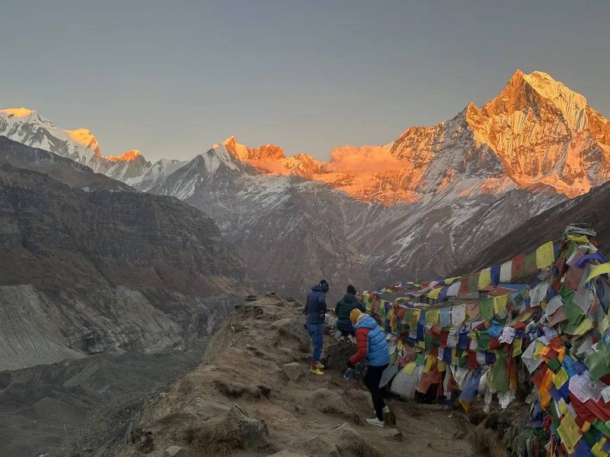
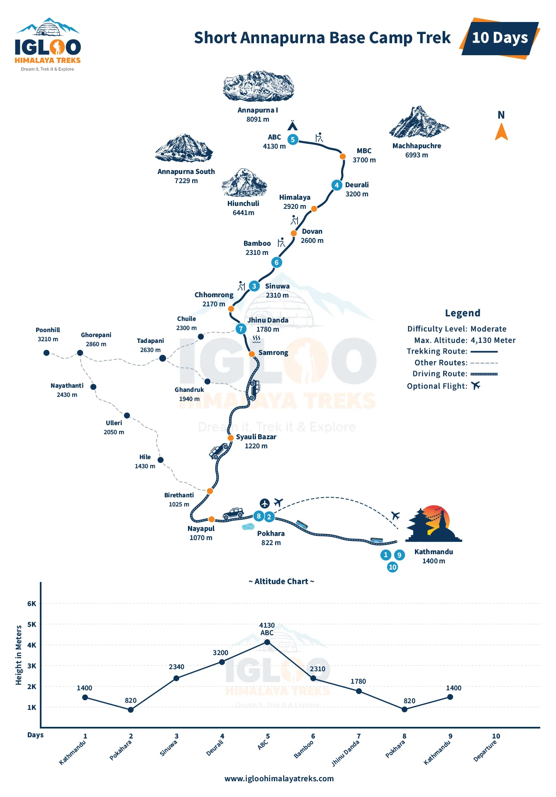
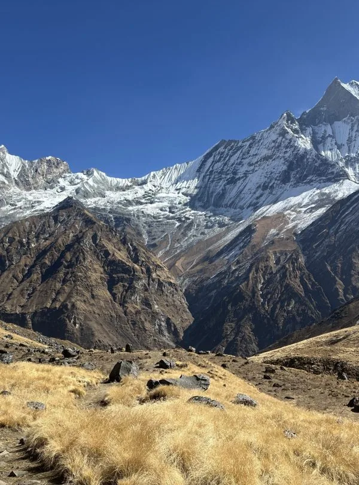
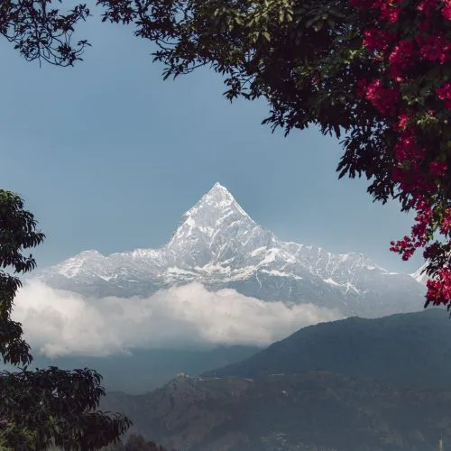
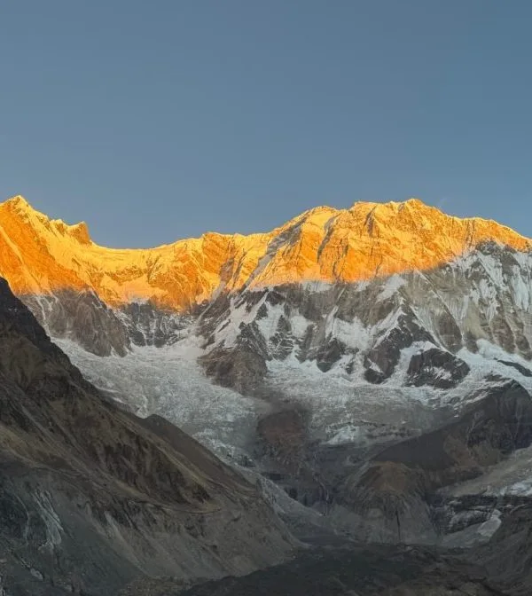
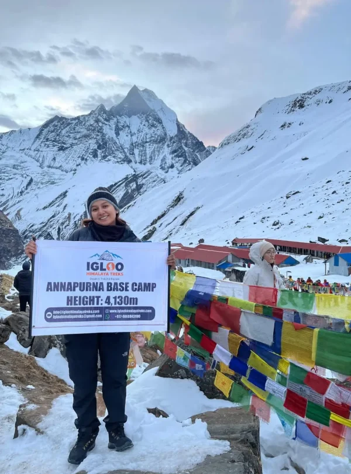
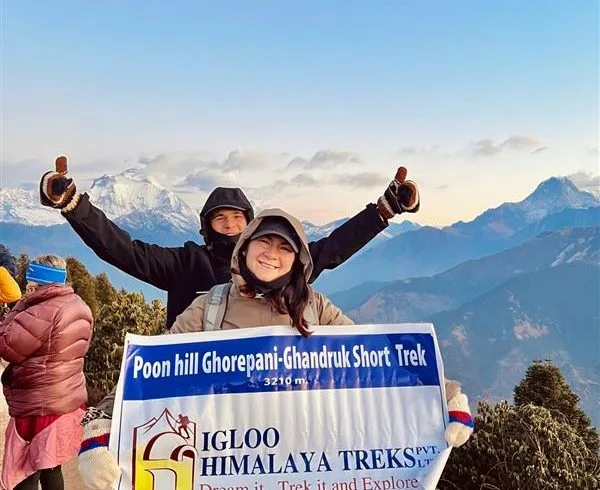
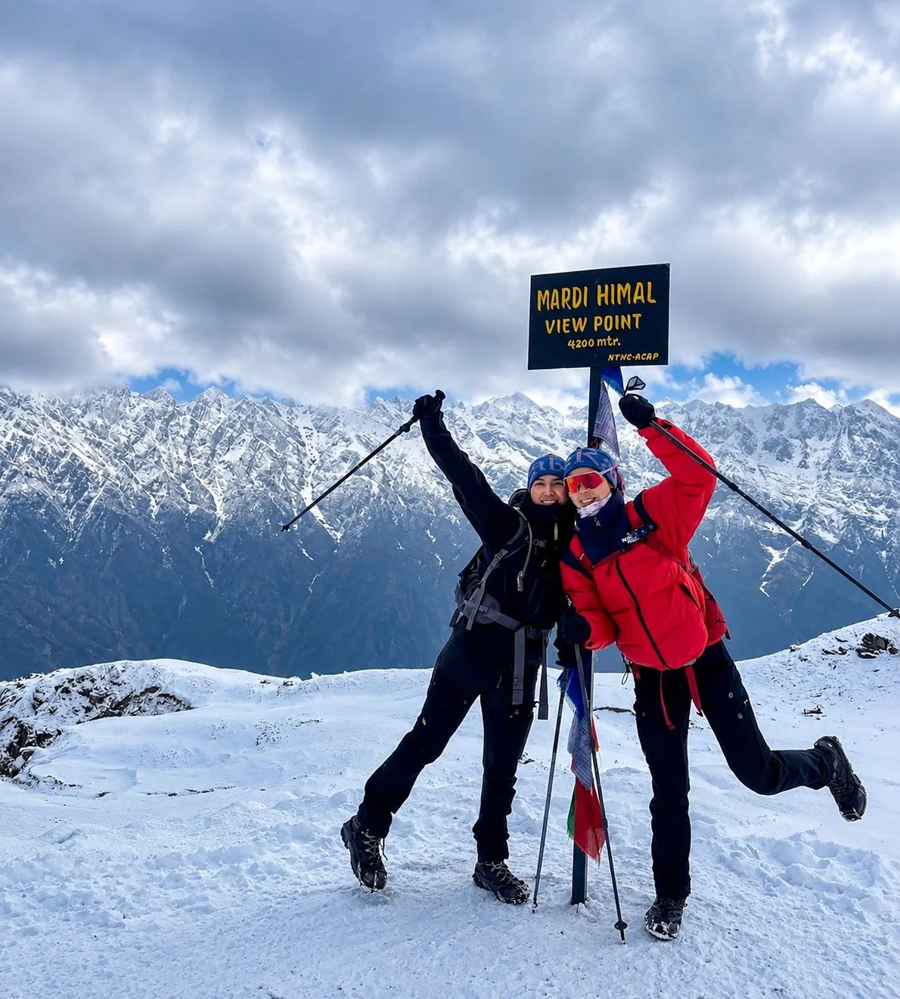

Our Short Annapurna Base Camp Trek (6 Days) with Igloo Himalaya Treks went beyond every expectation we had. What first pulled us towards them was their strict safety protocol and personal care. From start to finish, Sagar and our expert team made sure our Short Annapurna Base Camp Trek was comfortable, safe, and well acclimatized every single day!
Annapurna Region • Express High-Altitude Challenge
5.0
reviews on TripAdvisor
5.0
169 reviews on Google
Short Annapurna Base Camp Trek — 9 Days
Our nine-day Short Annapurna Base Camp Trek follows the direct route from Jhinu Danda through Sinuwa and Deurali into the Annapurna Sanctuary.

Travelers' Choice
Best of the Best 2026




Key Trip Facts
Duration
9 Days (5 Walking Days)
Difficulty
Moderate to Demanding
Maximum Altitude
~4,130 m (Base Camp)
Destination
Nepal
Activity
Trekking & Hiking
Accommodation
3-Star Hotels & Teahouses
Transport
Tourist Buses & Private Jeeps
Meals
All Trek Meals + City Breakfasts
Recommended Season
Spring (Mar–May) & Autumn (Sep–Nov)
Trek Starts
Jhinu Danda area (via Pokhara Drive)
Trek Ends
Jhinu Danda area (via Pokhara Drive)
Trek Region
Annapurna Sanctuary
Package Start Point
Kathmandu
Package End Point
Kathmandu
Short Annapurna Base Camp Trek Overview
Our nine-day Short Annapurna Base Camp Trek offers a direct route into the Annapurna Sanctuary from Pokhara, omitting the Ghorepani and Poon Hill loop. It includes five days on the trail, with an overnight stay at Annapurna Base Camp beneath the peaks of the sanctuary.
After travelling from Kathmandu to Pokhara, you drive to the Jhinu Danda area to begin walking. The trail climbs to Chhomrong and continues into the Modi Khola valley through Sinuwa and Bamboo. Above Deurali, the forest gives way to open mountain terrain before you reach Machhapuchhre Base Camp and continue to Annapurna Base Camp.
Reaching 4,130 m over three walking days means climbing steadily each day. Stone staircases, uneven paths and consecutive walking stages make this route physically demanding despite avoiding higher passes.
The return follows the same valley to Bamboo and Chhomrong before descending to Jhinu Danda. An optional visit to its riverside hot springs is possible if conditions allow. A drive brings you back to Pokhara before your return travel to Kathmandu.
You stay in mountain teahouses during the trek and hotels in Kathmandu and Pokhara. The nine-day programme covers arrival, walking days, return travel and departure from Nepal.
Key Route Highlights & Destinations
Annapurna Base Camp (4,130 m)
Machhapuchhre Base Camp (3,700 m)
Modi Khola Bamboo & Rhododendron Forests
Chhomrong & Sinuwa Gurung Villages
🪜 Direct Sanctuary Ascent via Deurali
Jhinu Danda Riverside Hot Springs
Short Annapurna Base Camp Trek Highlights
- ✓ Reach Annapurna Base Camp at 4,130 m, surrounded by Annapurna I, Annapurna South, Hiunchuli and nearby peaks.
- ✓ Follow a direct route into the Annapurna Sanctuary, suited to trekkers with limited time who are prepared for consecutive walking days and altitude gain.
- ✓ Walk through bamboo, rhododendron and oak forests along the Modi Khola before entering open mountain terrain above Deurali.
- ✓ Pass Machhapuchhre Base Camp (3,700 m) on the approach to ABC, with mountain views as the valley widens.
- ✓ Walk through Chhomrong and Sinuwa, where hillside villages and stone staircases add cultural variety to the route.
- ✓ Descend through Jhinu Danda, where an optional visit to the riverside hot springs offers relaxation after five days on the trail.
Why Book the Short Annapurna Base Camp Trek with Igloo Himalaya Treks?
We help you prepare in Kathmandu and support your journey through the Annapurna region with dedicated local logistical care.
Arrival Briefing and Trek Preparation
Before leaving Kathmandu, we explain the daily schedule, check your gear and answer questions about trail conditions and facilities.
Guide and Porter Support
Your package includes a licensed English-speaking trekking guide and one porter for every two trekkers to carry your main luggage.
Equipment Provided for the Trek
We provide a sleeping bag, down jacket and duffel bag for personal use during the trek, returned at the end of the trip.
Communication When Plans Change
Weather, road conditions or health concerns can alter plans. Our team keeps you informed, discusses options and handles necessary adjustments.
Short Annapurna Base Camp Trek Itinerary — Day by Day
Our 9-day itinerary includes Kathmandu transfers and five walking days into the Annapurna Sanctuary. Times and distances are approximate; pace, weather and trail conditions can affect each day’s schedule.
Day 1: Arrival at Tribhuvan International Airport, Kathmandu
Overnight altitude
Approximately 1,400 m
Accommodation
3-star hotel in Kathmandu
Meals
Not included
Our representative meets you at Tribhuvan International Airport and transfers you to your hotel in Kathmandu. We hold a briefing about the trek programme and check your essential equipment. You can use any free time to pick up last-minute items or rest before travel begins tomorrow.
Day 2: Drive from Kathmandu to Pokhara
Driving time
Approximately 7 hours, depending on traffic and road conditions
Road distance
Approximately 203 km
Overnight altitude
Around 850 m
Accommodation
3-star hotel in Pokhara
Meals
Breakfast
We travel from Kathmandu to Pokhara by tourist bus, following the Trishuli and Marsyangdi river valleys. Road conditions and traffic can affect travel time. After checking in at your Pokhara hotel, the afternoon is free to rest or take a walk beside Phewa Lake before tomorrow’s drive to the trail.
Day 3: Drive to Jhinu Danda and Trek to Sinuwa
Driving time
Approximately 2–3 hours
Walking time
Approximately 5–6 hours
Trek distance
Approximately 5.3 km
Overnight altitude
Sinuwa, around 2,340 m
Accommodation
Teahouse in Sinuwa
Meals
Breakfast, lunch and dinner
A morning jeep drive takes us from Pokhara to the Jhinu Danda area, where the trek begins. After crossing the long suspension bridge below Jhinu Danda, we climb through stone staircases towards Chhomrong. From Chhomrong, the trail descends to cross the Chhomrong Khola before climbing again towards Sinuwa. Today introduces the steep stair climbing that characterises this route.
Day 4: Trek from Sinuwa to Deurali
Walking time
Approximately 6–7 hours
Trek distance
Approximately 12 km
Overnight altitude
Around 3,200 m
Accommodation
Teahouse in Deurali
Meals
Breakfast, lunch and dinner
We follow the forested Modi Khola valley from Sinuwa, passing through Bamboo, Dovan and Himalaya. The route climbs through bamboo, rhododendron and oak forest, with sections of stone steps and river crossings along the way. Above Himalaya, the trail enters a steeper gorge section before reaching Deurali, where the valley begins to open out.
Day 5: Trek from Deurali to Annapurna Base Camp via MBC
Walking time
Approximately 4–5 hours
Trek distance
Approximately 5.2 km
Main stop
Machhapuchhre Base Camp, around 3,700 m
Overnight altitude
Annapurna Base Camp, 4,130 m
Accommodation
Teahouse at Annapurna Base Camp
Meals
Breakfast, lunch and dinner
We climb from Deurali into more open mountain terrain, following the river valley towards Machhapuchhre Base Camp at around 3,700 m. After a stop, we continue along the widening valley into the Annapurna Sanctuary. Annapurna I, Annapurna South, Hiunchuli and surrounding peaks rise around the base camp area. We stay overnight in a teahouse at ABC, the highest point on this itinerary. Temperatures drop significantly after sunset.
Day 6: Trek from Annapurna Base Camp to Bamboo
Walking time
Approximately 6–7 hours
Trek distance
Approximately 18.7 km
Overnight altitude
Around 2,310 m
Accommodation
Teahouse in Bamboo
Meals
Breakfast, lunch and dinner
Early morning offers views of the surrounding peaks from base camp in clear weather. After breakfast, we retrace our steps down the valley past Machhapuchhre Base Camp and Deurali. The descent continues through Himalaya and Dovan into the bamboo forest. Although downhill, the long descent over rocky ground and stone steps requires care. We spend the night at Bamboo.
Day 7: Trek from Bamboo to Jhinu Danda and Drive to Pokhara
Walking time
Approximately 5–6 hours, excluding any hot-spring visit
Trek distance
Approximately 11.6 km
Driving time
Approximately 2–3 hours, depending on road access and conditions
Overnight altitude
Pokhara, around 850 m
Accommodation
3-star hotel in Pokhara
Meals
Breakfast and lunch; dinner in Pokhara not included
From Bamboo, the trail climbs through Sinuwa and descends to the river before the stone staircase back up to Chhomrong. From Chhomrong, we descend towards Jhinu Danda. If time and conditions allow, an optional walk to the riverside hot springs can be arranged before our road pickup. A jeep drive returns us to Pokhara, where you check in at your hotel for the evening.
Day 8: Drive to Kathmandu by Tourist Bus
Driving time
Approximately 7 hours, depending on traffic and road conditions
Road distance
Approximately 203 km
Overnight altitude
Approximately 1,400 m
Accommodation
3-star hotel in Kathmandu
Meals
Breakfast
We return to Kathmandu by tourist bus along the Prithvi Highway. The journey follows the river valleys and can be affected by traffic and roadworks. After reaching Kathmandu and checking in at your hotel, the rest of the day is free for resting, shopping or exploring.
Day 9: Farewell and Airport Transfer
Main activity
Departure from Nepal
Meals
Breakfast
Your nine-day Short Annapurna Base Camp Trek concludes today. Our representative provides transfer to Tribhuvan International Airport in Kathmandu according to your flight departure time.
Not satisfied with this Itinerary?
Are you interested on planning custom trip? It only takes 2 minutes.
What’s Included & Not Included in the Short Annapurna Base Camp Trek
✓
What’s Included
- ✔ Airport transfers: Pickup and drop-off between Tribhuvan International Airport and your hotel in Kathmandu.
- ✔ Transport: Return tourist bus tickets between Kathmandu and Pokhara; private jeep transport from Pokhara to the Jhinu Danda area and return.
- ✔ Accommodation: Two nights in a 3-star hotel in Kathmandu and two nights in a 3-star hotel in Pokhara (twin-sharing basis); four nights in local mountain teahouses during the trek.
- ✔ Meals: Breakfast at hotels in Kathmandu and Pokhara; breakfast, lunch and dinner during the five trekking days, including tea or coffee, seasonal fruit and a Snickers bar daily.
- ✔ Guide and porter: A licensed English-speaking trekking guide and one porter for every two trekkers (carrying up to 15 kg per trekker), including their wages, meals, accommodation and insurance.
- ✔ Permits and fees: Annapurna Conservation Area Project (ACAP) entry permit, Trekkers’ Information Management System (TIMS) card and local government fees.
- ✔ Trekking equipment: A sleeping bag, down jacket and duffel bag provided for use during the trek (returned at the end of the trip).
- ✔ First-aid kit: A comprehensive medical kit and pulse oximeter carried by the guide for basic first aid and altitude monitoring.
- ✔ Farewell dinner: A traditional Nepali farewell dinner in Kathmandu.
- ✔ Trip extras: Route map and a certificate of completion at the end of the trek.
✕
What’s Not Included
- ✕ International flights and visa: Airfare to and from Nepal and the Nepal tourist visa fee.
- ✕ Travel insurance: Mandatory insurance policy covering high-altitude trekking (up to 4,200 m) and emergency helicopter evacuation.
- ✕ Emergency evacuation: Helicopter rescue and unexpected medical expenses beyond basic first aid.
- ✕ Personal gear: Boots, technical layers, toiletries and electronics beyond the provided down jacket and sleeping bag.
- ✕ Extra food and drinks: Bottled or boiled water, soft drinks, alcoholic beverages and snacks outside the included meals.
- ✕ City lunches and dinners: Meals in Kathmandu and Pokhara other than breakfast and the farewell dinner.
- ✕ Teahouse extras: Hot showers, Wi-Fi connections and battery/device charging fees at lodges.
- ✕ Tipping: Gratuities for the guide, porter and drivers.
- ✕ Optional flights and extensions: Domestic flights between Kathmandu and Pokhara, single room supplements or extra costs from travel delays.
Short Annapurna Base Camp Trek Dates & Availability
We operate guaranteed small group departures and tailored private departures throughout spring and autumn.
Group Departures
If you would like to trek with other travellers, ask us about upcoming group departures. We’ll confirm the available dates, spaces and price for your chosen departure.
Private Trek Dates
Prefer to travel with your own group? Send us your preferred arrival date and number of travellers. We’ll check arrangements and tailor the schedule for a private trek.
Starting Prices
| Number of Travellers | Package Price per Person | Action |
|---|---|---|
| 1 Person (Solo) | USD 570 | |
| 2–7 People | USD 505 | |
| 8–14 People | USD 435 | |
| 15–20 People | USD 390 Best Deal | |
| Other Group Sizes / Custom | Request a quote |
Prices are in US dollars and represent starting rates. Contact us with your travel dates and group size to confirm availability and your final quotation.
What to Pack for the Short Annapurna Base Camp Trek
Pack layers for warm walking days in the lower valley, colder mornings and evenings higher up, and freezing nights at ABC. Keep water, rain gear, warm layers, medicines and valuables in your daypack. Your main gear goes into the provided duffel carried by your porter.
Checked: 0 / 33 items
Hiking Gear 7 items
Clothing 9 items
A down jacket is supplied for your use during the five trekking days.
Sleeping Equipment 2 items
A sleeping bag is provided by us for the trek.
Toiletries & Hygiene 5 items
Electronics 4 items
Documents & Personal Items 6 items
A duffel bag is provided for your main gear carried by porters.
0/10 read
Click topics below to explore essential briefings
Trek Difficulty and Fitness
The Short Annapurna Base Camp Trek is graded moderate to demanding. Although it involves only five days of walking, each day covers substantial distance and elevation gain, particularly on the ascent to Deurali and ABC.
The route features thousands of uneven stone steps, steep ascents and sustained descents. Good cardiovascular fitness and leg endurance are essential.
Start training at least two to three months before your trek. Focus on hill walking with a weighted daypack, stair climbing, running or cycling, and strength training for the legs and core.
Altitude and Acclimatisation
This itinerary reaches 4,130 m over three days of walking from Jhinu Danda. Because there are no scheduled acclimatisation rest days, you must pay close attention to your body’s signals.
Drink 3–4 litres of water daily, maintain a steady pace, and report any symptoms such as persistent headache, nausea, dizziness or unusual fatigue to your guide immediately.
Never ascend to a higher sleeping altitude while experiencing symptoms of Acute Mountain Sickness (AMS). If symptoms do not improve with rest, descending to a lower altitude is mandatory.
Medical Conditions and Travel Insurance
If you have pre-existing medical conditions, consult your doctor before booking, especially regarding travel to altitudes above 4,000 metres.
Travel insurance with specific cover for high-altitude trekking up to at least 4,200 metres and emergency helicopter evacuation is compulsory for this trip. Check your policy carefully for altitude exclusions, excess amounts and claims procedures, and carry hard copies of your policy.
Accommodation and Room Facilities
In Kathmandu and Pokhara, you stay in comfortable 3-star hotels on a twin-sharing basis with private bathrooms. During the trek, accommodation is in local mountain teahouses.
Teahouse rooms are simple, usually with twin beds, foam mattresses and pillows. Bathrooms are shared, and hot showers are available for an extra fee. Rooms at Annapurna Base Camp are basic, and during peak trekking seasons, sharing dorm-style rooms may be required.
Food and Dietary Requirements
All meals on the trek are included. Teahouses offer hearty menus featuring traditional Nepali dal bhat, noodles, fried rice, pasta, potatoes, soups and eggs.
Vegetarian, vegan and gluten-free diets can be accommodated. Please inform us of any dietary requirements or food allergies when booking so your guide can assist with meal selections.
Drinking Water
Safe drinking water is essential. To reduce plastic waste in the conservation area, we encourage using reusable bottles or a hydration bladder.
Boiled water can be purchased at teahouses, or you can treat tap/spring water using chlorine dioxide purification tablets, a UV steriliser (Steripen) or a reliable portable water filter.
Guide and Porter Support
Your trek is led by an experienced, licensed English-speaking Nepali guide trained in wilderness first aid and altitude safety.
Porters are provided at a ratio of one porter per two trekkers, carrying up to 15 kg of luggage per person in the provided duffel bag. You carry only a light daypack with your daily essentials.
Showers, Charging and Communication
Hot showers (gas or solar) and electronic device charging are available at most teahouses for an additional cost (typically NPR 200–500 per service).
Wi-Fi is available at many teahouses for a fee, though connection speeds can be slow and unreliable higher up. Mobile network coverage (Ncell and Nepal Telecom) is available in lower areas but intermittent above Himalaya.
Permits and Documents
We arrange all necessary permits, including the Annapurna Conservation Area Project (ACAP) entry permit and the Trekkers’ Information Management System (TIMS) card.
You must bring a valid passport with at least six months validity, two passport-sized photographs, and proof of your travel insurance policy.
Road Conditions and Extra Time
The road between Kathmandu and Pokhara (Prithvi Highway) is subject to ongoing expansion work, traffic delays and weather-related disruptions. A journey typically takes around seven hours but can take longer.
We recommend booking flexible onward international flights or allowing an extra contingency day in Kathmandu at the end of your trip in case of travel delays.
Altitude Profile of the Short Annapurna Base Camp Trek
You drive from Pokhara to the Jhinu Danda area and ascend directly through Sinuwa and Deurali to Annapurna Base Camp. The descent follows the same valley back to Jhinu Danda before returning to Pokhara.
Overnight Altitudes
| Day | Overnight Stop | Approximate Altitude |
|---|---|---|
| Day 1 | Kathmandu | 1,400 m |
| Day 2 | Pokhara | 850 m |
| Day 3 | Sinuwa | 2,340 m |
| Day 4 | Deurali | 3,200 m |
| Day 5 | Annapurna Base Camp (Highest Overnight) | 4,130 m |
| Day 6 | Bamboo | 2,310 m |
| Day 7 | Pokhara | 850 m |
| Day 8 | Kathmandu | 1,400 m |
| Day 9 | Departure | No overnight stay |
Elevations are approximate and follow the overnight stops in our itinerary.
Higher Places You Visit
- • Day 5 — Machhapuchhre Base Camp: Around 3,700 m, visited en route to ABC.
- • Day 5 — Annapurna Base Camp: Around 4,130 m, the highest planned point and overnight stop.
Ascending from Sinuwa at 2,340 m to ABC at 4,130 m over two days is a compact profile; pay close attention to acclimatisation.
Weather and Best Time for the Short Annapurna Base Camp Trek
Spring (March to May) and autumn (September to November) offer the most reliable weather, clear skies and moderate temperatures on the Short ABC route. Winter brings freezing conditions and snow above Deurali, while monsoon brings heavy rain, slippery trails and leeches.
Seasonal Weather Conditions
| Season | Months | What to Expect |
|---|---|---|
| Spring | March–May | Gradually warming temperatures, blooming rhododendrons in the lower valley and generally clear mornings. Snow can linger at ABC early in the season, and afternoon cloud is common in May. |
| Autumn | September–November | The most popular trekking period, with post-monsoon crystal-clear skies, stable weather and outstanding mountain views. Nights become increasingly cold at ABC by November. |
| Winter | December–February | Clear, quiet trails but severe cold, especially at ABC where temperatures often drop below -10°C. Snow and ice can make the gorge between Deurali and MBC hazardous. |
| Monsoon | June–August (to Sep) | Heavy daily rainfall, high humidity, cloud cover obscuring peaks, leeches along forest sections and risk of landslides on roads and trails. Not recommended for most trekkers. |
These are seasonal patterns; conditions can vary from year to year and during an individual trek.
How Weather Changes Along the Route
Lower elevations around Jhinu Danda and Sinuwa are subtropical and warm, while the upper valley beyond Deurali is alpine and exposed. Temperatures drop markedly with each day of ascent.
Even during autumn, nights at ABC can fall below freezing. Pack comprehensive thermal layers, a windproof shell and a four-season sleeping bag regardless of departure month.
Which Season Should You Choose?
Choose autumn (October–November) for the clearest visibility, best photography and stable trail conditions.
Choose spring (March–April) for warmer walking days, vibrant rhododendron blossoms and longer daylight hours.
Short Annapurna Base Camp Trek Map
Book the Short Annapurna Base Camp Trek
Send us your preferred travel dates, group size and any questions. We’ll confirm availability, current prices and details for your trip. If you are unsure whether this compact five-day walking programme fits your fitness, let us know so we can advise.
Best Himalayan Trekking Reviews
Over 15,000 adventure seekers have explored Everest, Annapurna, and Manaslu with Igloo Himalaya Treks.

9 May

28 February

11 January

14 March
Short Annapurna Base Camp Trek FAQs
General & Route
Can I do this trek without previous trekking experience?
∨
Yes, provided you prepare thoroughly and have solid fitness. Previous hillwalking experience helps, but technical climbing skills are unnecessary. Practise regular uphill and downhill walking with a daypack before arrival.
What is the highest altitude on this itinerary?
∨
The highest planned point and overnight stop is Annapurna Base Camp at approximately 4,130 metres. Machhapuchhre Base Camp is reached earlier on Day 5 at around 3,700 metres before continuing along the valley.
Does this short route include Ghorepani and Poon Hill?
∨
No. This nine-day itinerary takes the direct route into the Annapurna Sanctuary from the Jhinu Danda area and omits the Ghorepani and Poon Hill loop. If you want to include Poon Hill, choose our 13-day Annapurna Base Camp Trek via Poon Hill.
Do we sleep at Annapurna Base Camp?
∨
Yes. You spend the night in a teahouse at Annapurna Base Camp on Day 5, then descend towards Bamboo the following day. Camping is not part of this trip. Facilities at ABC are basic, nights can be below freezing, and rooms may be shared during busy periods.
Are there dedicated acclimatisation days?
∨
No. This compact itinerary ascends to Annapurna Base Camp over three walking days without a rest day. You need to be prepared for the altitude gain and tell your guide promptly about any symptoms of altitude illness.
Do I need to carry my main trekking bag?
∨
A porter carries your main trekking luggage, with one porter shared between two trekkers. You carry your daypack with water, weather protection, warm layers, medicines and valuables.
Do I need to bring a sleeping bag and down jacket?
∨
We supply a sleeping bag, down jacket and duffel bag for use during the trek; these must be returned at the end. You remain responsible for your personal trekking clothes, boots, toiletries and electronics.
Is insurance covering trekking to 4,000 metres sufficient?
∨
No. A 4,000 m policy limit is not enough because Annapurna Base Camp sits at approximately 4,130 metres. Ensure your policy covers trekking up to at least 4,200 metres and includes emergency helicopter evacuation and medical treatment in Nepal.
Does being fit protect me from altitude sickness?
∨
No. Good fitness helps you handle the physical demands of consecutive walking days, but it does not prevent altitude illness. Anyone can be affected regardless of fitness. Ascend at a steady pace, drink plenty of water and follow your guide’s advice.
What should I do if I feel unwell at altitude?
∨
Inform your guide promptly if you develop headaches, nausea, dizziness or unusual fatigue. Do not ascend further while experiencing symptoms. If symptoms persist or worsen, descent is necessary.
How does the 13-day ABC package differ from this itinerary?
∨
Our 13-day package adds the Ghorepani and Poon Hill loop, giving you the sunrise viewpoint and four additional days of village and forest walking before joining the route into the Sanctuary. The nine-day package focuses solely on the direct journey to ABC and back.
Can I book as a solo traveller?
∨
Yes. Solo travellers can enquire about joining an upcoming group departure or booking a private trek. Send us your preferred dates to check options and pricing.
MORE ADVENTURES
You Might Also Like
If you would prefer a longer Base Camp route, a dedicated sunrise viewpoint or a different combination, consider these Annapurna-region packages.
Annapurna Region
Annapurna Base Camp Trek via Poon Hill — 13 Days
Combines the famous Poon Hill sunrise viewpoint with the journey into the Sanctuary, giving you extra days of village and forest walking before heading to ABC.

Annapurna RegionABC With Mardi Himal Trek — 13 Days
Combine the Annapurna Sanctuary journey with the dramatic Mardi Himal ridge route. Choose this package for base camp scenery and sweeping views towards Machhapuchhre.

Annapurna RegionGhorepani Poon Hill Trek — 10 Days
Explore the Annapurna foothills and visit Poon Hill for sunrise, with rhododendron forest paths and village stays along the route without continuing up to base camp.

Annapurna RegionMardi Himal Trek — 9 Days
Follow forest trails towards the Mardi Himal high ridge for close-up views of Machhapuchhre and the Annapurna range, perfect for scenic ridge walking.
Enquire about your preferred package for current prices and availability.